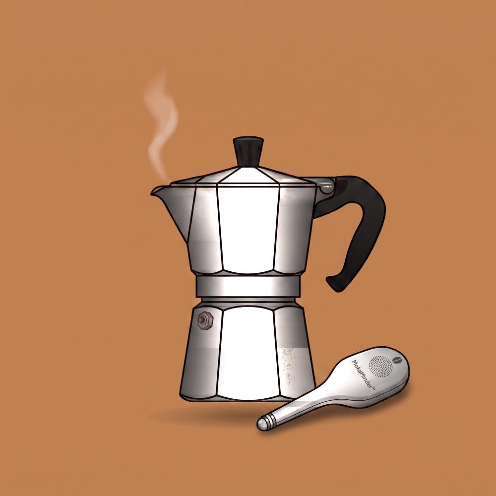

Cover story
The long road to a better moka
Everything you need to know about brewing better moka coffee — method, history, culture, and the mistakes worth avoiding.
Also, I've solved the age-old problem of babysitting an empty pot, waiting for first flow. Check it out here: MokaMinder™, still in development. Visit MokaMinder.com →
Read my story →